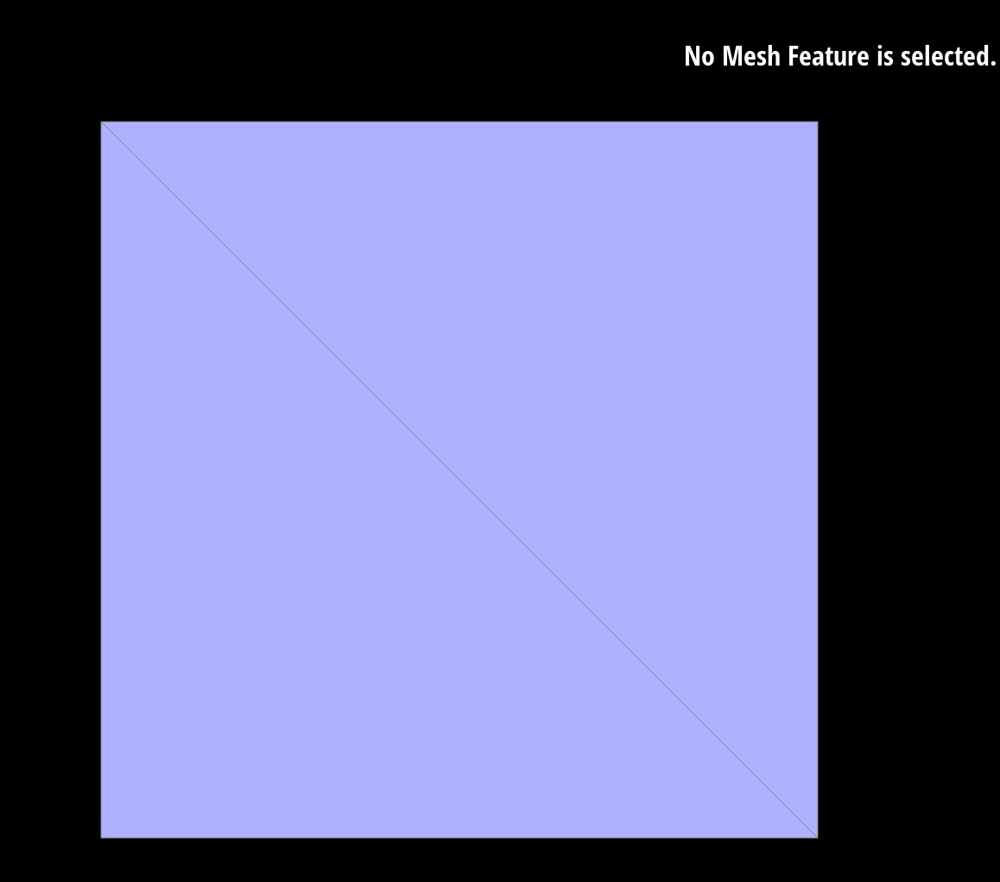
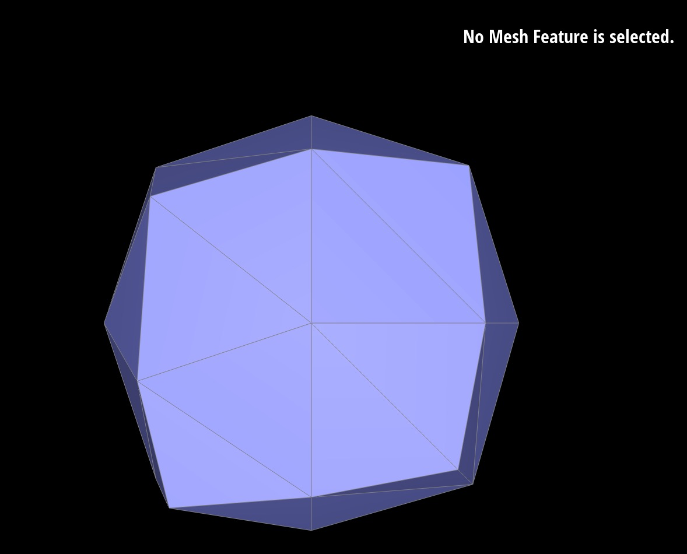
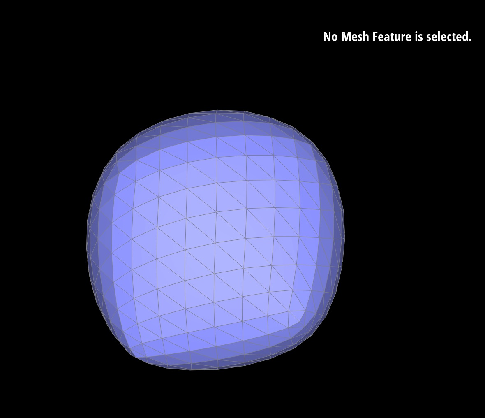

link: https://cal-cs184-student.github.io/hw-webpages-sp24-katherine-liu0/hw2/index.html
Homework 2
Overview
In this homework, I covered concepts including Bezier Curves and mesh operations. The Bezier Curves section is primarily centered around the de Casteljau algorithm. In Part 1 I build Bezier Curves using control points, and in Part 2 I build Bezier Surfaces based on the curves. The following sections is centerted around manipulating triangle meshes using half-edged data structures. In Part 3, I implement the more smooth Phong shading to the teapot. In Part 4 and 5, I implement edge flip and split. In Part 6, I practice loop division to upsample a mesh.
Part 1
De Casteljau's algorithm for drawing Bezier curves involves the following steps:
Assume we have a set of control points, including a start point, an end point, and intermediate points.
For a first-order Bezier curve, only two control points, P0 and P1, need to be determined. Any point on the curve can be calculated using the following formula: Q(t) = (1 - t)P0 + tP1, where the value of t ranges from 0 to 1. For higher-order Bezier curves, the above formula can be recursively called to calculate the curve (subdivides the control points into smaller sets of control points/set of 2.)
Here is a illustrative figure from lecture slides:
Bezier curves are known for their good smoothness and interpolation effects. By adjusting the control points, the shape of the curve can be flexibly changed, making it suitable for drawing curves, graphic design, and other fields. However, it is important to choose an appropriate curve order to balance the complexity of the curve and computational efficiency.
Here is my curve with 6 control points:
Original control points:
Intermediate evaluated points:
Final evaluated point:
The curve:
Modified control points and parameter t
Part 2
When de Casteljau's algorithm is extended to Bezier surfaces, it uses two-dimensional parameters (u, v) to represent points on the surface. By interpolating calculations on u and v, the coordinates of each point are obtained. Considering the layout of control points, the interpolation points in each direction are calculated step by step, eventually making the complete Bezier surface.
Steps:
evaluateStep Function
Initialize an empty vector newPoints to store the newly interpolated points.
For each pair of adjacent points in the input vector points, calculate an interpolated point based on the parameter t, using the formula (1−t)⋅point i+t⋅point i+1
Each new interpolated point is then added to newPoints.
Once all pairs are processed, newPoints is returned, containing the interpolated points for this step.
evaluate1D Function
Start with the original vector of points and repeatedly applies evaluateStep to these points until only one point remains. This point is the final interpolated point for the given parameter t.
In each iteration, evaluateStep reduces the number of points by one until the size of intermediatePoints is 1, indicating the final point on the Bezier curve for parameter t.
evaluate Function
First apply evaluate1D to each row of control points using parameter u, which generates a set of intermediate points. These points can be seen as control points that define the Bezier curves in the v direction.
Then, apply evaluate1D again, but this time to the vector of points obtained from the previous step, using parameter v. This step interpolates between the curves defined by the rows, effectively evaluating the surface at (u,v).
The final result is a single Vector3D point, which is the point on the Bezier surface corresponding to the parameters u and v.
Part 3
Steps:
Initialization of Variables:
The function creates a Vector3D object 'normalSum' initialized to (0.0, 0.0, 0.0). This variable then accumulates the area-weighted normals of all neighboring faces of the vertex.
Iterating Over Incident Half-Edges:
Retrieve the starting half-edge of the vertex (he_start) and set 'he' as an iterator to traverse all incident half-edges.
Boundary Check:
If the vertex is on the boundary of the mesh (checked by 'he->isBoundary()'), the function returns the zero vector as its normal, indicating no calculation is needed or possible in this context.
Loop Over Neighboring Faces:
Iterate over all half-edges (and thus faces) adjacent to the vertex. This loop continues until it returns to the starting half-edge, ensuring all incident faces are processed.
Face Normal Calculation:
For each face, calculate its normal by first determining the positions of the vertices that form the face (p0, p1, p2). The cross product of the vectors (p1 - p0) and (p2 - p0) gives a vector perpendicular to the face, i.e., the face normal. This vector is then normalized (unit() is called to make the vector a unit length).
Area Weighting:
The area of the face is approximated as half the norm of the original (before normalization) cross product vector. This approximation works because the magnitude of the cross product gives twice the area of the triangle formed by the vectors. The face normal is then weighted by this area before being added to normalSum.
Summing and Normalizing:
The area-weighted face normal is added to normalSum. This process repeats for all neighboring faces, accumulating an area-weighted sum of the normals. After the loop completes, normalSum is normalized to obtain the final vertex normal. This final step ensures the resulting normal is of unit length, making it suitable for lighting calculations in graphics.
The teapot with default flat shading and more smooth Phong shading:
Part 4
To flip the edge, I first get the outer and inner halfedges, as well as their adjacent vertices, edges, and faces. Then, I updated the connectivity among these half-edges, vertices, and edges. This process does not involve creating new half-edges, vertices, or edges; it merely changes their connectivity relations. The objective here is to flip the connection between two triangles, for example, composed of vertices a, b, c, and d, where b and c are connected. After the flip, a and d should be connected instead. During debugging, I used printf statements to display the memory pointers of edges and vertices. By comparing these printed pointers with the edges and vertices selected using the mouse at runtime, I was able to identify their connectivity relations. This approach is very helpful for the process of modifying the connectivity through code to achieve the edge flip.
Before edge flip
After edge flip
Part 5
Similar to Part4, I began by identifying the half-edges, both inner and outer ones, associated with the target edge, as well as the adjacent vertices, edges, and faces. Unlike the edge flip operation, splitting an edge creates one vertex, three edges, six half-edges, and two faces, necessitating the creation of new objects for these components. After creating these new elements, I updated the connectivity relations among the half-edges, vertices, and edges to achieve the edge split operation. For debugging, also similar to my approach in the previous task, I used printf to display the pointer values of half-edges, vertices, and edges in the code. By comparing these values with those of the objects selected using the mouse during runtime, it's easy to verify the connectivity relations among them.
Before edge split
After edge split

Split+Flip
Part 6
To use loop subdivision to upsample a mesh, I uses the recommended approach in the hw spec:
1. Update vertex position: compute new positions for all the original mesh vertices according to the Loop subdivision rule, which involves averaging the positions of neighboring vertices and adjusting the original vertex position to smooth out the mesh. This step also marks each vertex as original by setting isNew to false.
2. Create edge vertice: calculate the positions for new vertices that will be placed on the edges of the mesh. These positions are determined by averaging the positions of the edge's endpoints and the opposite vertices of the adjacent faces, creating a smoother transition between mesh elements.
3. Edge Split: split every edge in the mesh, which not only inserts a new vertex at the edge's midpoint (defined by Edge::newPosition) but also divides the adjacent faces, increasing the mesh's detail. Boolean (isNew) is used to distinguish between original and newly created edges, preventing infinite loops.
4. Edge Flip: To further improve mesh smoothness and topology, flip new edges that connect an old and new vertex, adjusting local topology for a more uniform distribution of vertices.
5. Update Vertex Positions: update the mesh vertices with their new positions calculated in steps 1 and 2
Here are the screenshots showing the teapot being upsampled
Observations: Loop subdivision tends to smooth out sharp corners and edges, as the process averages vertex positions. This can lead to the loss of intended sharp features in the original model. To mitigate excessive smoothing, we can pre-split some edges or apply crease algorithms that adjust the subdivision rules for edges marked as sharp, retaining more of the original model's character.
crease algorithm from class slides
Here are the screenshots showing the cube being upsampled
  It can be seen that the cube becomes asymmetric after repeated subdivisions.
To mitigate the asymmetry, I split each edge on a cube's face to form an "X" pattern before applying Loop subdivisions. As can be seen from the following screenshots, a symmetric circular cube is shown after several iterations.
By splitting each edge and adding a vertex in the middle, the lengths of the edges around each face are more consistent (averaged). When Loop subdivision is applied, the algorithm can more evenly distribute the new vertices, as it relies on edge lengths to compute new vertex positions. The "X" pattern also ensures that each face of the cube is divided in a symmetrical manner, creating a consistent pattern of connectivity across the mesh.